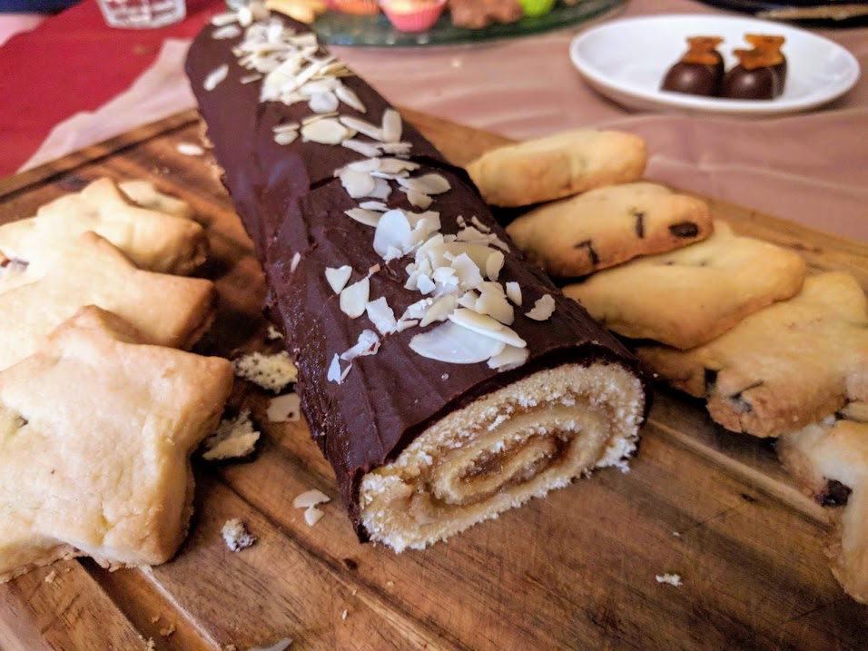

Biscuit roulé à la confiture

Pour une dizaine de parts d'un gâteau pas très gros :
- 3 œufs
- 90g de farine (ou bien, 60g de farine et 30g de poudre d'amandes)
- 90g de sucre
- 5 cuillères à soupe de confiture (par exemple, de la marmelade d'oranges amères)
- (facultatif) des amandes effilées
- Préchauffer le four à 200°C. Casser les blancs en séparant les jaunes des blancs, monter les blancs en neige et y incorporer le sucre à mi-parcours. Ajouter ensuite les jaunes et la farine.
- Bien mélanger, et étaler la pâte sur une plaque couverte de papier sulfurisé. Bien égaliser, et enfourner pour dix minutes (précisément).
- Une fois cuit, démouler le biscuit en le retournant sur un torchon humide (qu'on aura passé sous l'eau et essoré à la main juste avant) et le rouler entre le torchon et le papier sulfurisé.
- Laisser refroidir, puis dérouler le biscuit, ôter le papier sulfurisé, badigeonner généreusement de confiture et d'amandes. Rouler le biscuit.
Remarque : On peut ensuite décorer le biscuit avec de la chantilly, de la confiture ou des amandes sur le dessus ; et on peut aussi remplacer les amandes par des pépites de chocolat.